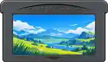

<main class="slot-stage">
  <header class="top"><span>SLOT36S</span><span class="signal">◦ COLLECTION 01</span></header>
  <section class="slot-shelf">
    <div class="slot-label">GAME MEDIA SYSTEM</div>
    
    <div class="selected-caption">GAME BOY ADVANCE</div>
  </section>
  <nav class="slot-actions" aria-label="Itens do catálogo">
    <div class="lab-entry" data-lab-item data-preview-title="Cartucho GBA" data-preview-description="Prévia de mídia inspirada na referência histórica de cartucho de Game Boy Advance. A imagem final e as animações reais do Slot.R36S ainda precisam de seus arquivos originais.">01 &nbsp; CARTUCHO GBA <span>●</span></div>
    <div class="lab-entry" data-lab-item data-preview-title="Layout de mídia" data-preview-description="Validação de proporções, selo do cartucho, alinhamento e espaçamento. A página exibida é uma reconstrução de referência, não o software original.">02 &nbsp; LAYOUT DE MÍDIA <span>○</span></div>
    <div class="lab-entry" data-lab-item data-preview-title="Animações" data-preview-description="Animações específicas serão ligadas quando o código real do Slot.R36S for recuperado ou adicionado ao GitHub.">03 &nbsp; ANIMAÇÕES <span>○</span></div>
  </nav>
  <footer class="footer"><span>↑↓ SELECT / A OPEN / B BACK</span><span>REFERENCE BUILD</span></footer>
</main>